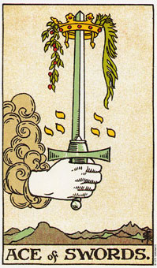

剑牌的王牌代表开始或计划一项新的冒险。
宝剑王牌描绘的是一只从云(或是精神)中伸出的手，掌中握着一把剑，剑端由一顶黄金皇冠的中间穿过。背景是一系列的淡灰色，而剑本身则是鲜明的蓝色。剑代表的是通澈的思想，亚瑟*维特(Arthur Waite，本书所使用的塔罗牌的设计者)也就是利用“蓝”这个颜色来强调它。这把剑是朝上的，而且双刃都看得到，表示说状况的两面都清楚的呈现在眼前。它表示注意到了生命的二元性。
皇冠代表的是物质世界，而剑刺穿了这个世界，由精神层面来看，它暗示您的心智可以看透物质世界，而看到事件的精神面因素，以及思想在物质世界中所造成的结果。这是一种理解，理解到宇宙中既没有奖赏，也没有惩罚，只有结果。
这张王牌告诉我们的是，计划或开始一项新的冒险行为。生命提供你一项新的可能，而你必须谨慎的评估任何所采取的行动可能带来的后果。
大体上的意义
宝剑王牌代表的是一个开始，时涉及以相信冒险或方案的行动。权杖王牌描述身体上的行动，杯子牌的王牌则是情感上的行动，而这张王牌叙述一个意念的形成，或是为未来的行动所准备的计划。
这张牌代表清晰的思考，或明确的了解到完成一项计划所需要的是什么。庆祝一这张王牌是宝剑牌组中仅有的两张垂直向上的剑牌中之一。一张是皇后笔直地握着她的剑;而大阿儿克纳牌中，正义这张牌所画的则是一个女人笔直地握这一把剑。至于其他所有剑牌中所呈现出来的剑，都有一个角度，暗示偏颇的思想，而倒立的剑则表示思想转而朝内影响思考这本身。
就日常生活的角度来看，正立的王牌可以表示清晰思考所带来的成功。确实的计划和清楚的将焦点置于想望的目标上会带来奖励。王牌也可以代表改善您物质生活的想法或计划。
两性关系上的意义
在两性关系的分析当中，宝剑王牌暗示一个你想从两性关系当中得到什么的明确计划。由于有了一个清楚的目标，通常你会比较容易获得你所想要的，因为你已经可以轻易辨认出什么是你不想要的，然后立即修正方向。
这张王牌所隐含的两性关系时，你和伙伴之间有种强烈的心智结盟，可能会有共同的目标和兴趣;也可暗示彼此理念的结合。
倒立的宝剑王牌
倒立的宝剑王牌暗示思考、想法和计划上的困惑。或许你没有办法看清楚在这个关键点上应做的选择。在下决定之前，先让自己集中注意力是比较明智的。你的想法可能脱离了现实和环境，而非务实和有用的。
这张牌可能意指你的想法或计划是行不通的，或是由于你缺乏明确的思考，而且如果你没有明确目标的话，获得成功的机会将是十分渺茫的。
你应该多花时间来想清楚，检视每一种选择，并将那些不切实际或难以实现者排除。此时此刻任何草率的行动似乎都很难有什么成就。你可能正焦急的要开始进行新事物，但是却不知道该从那个正确的方向着手。放轻松，并且让你的脑袋沉湎下来，在开始任何新事物之前，先形成一个有凝聚力的计划。